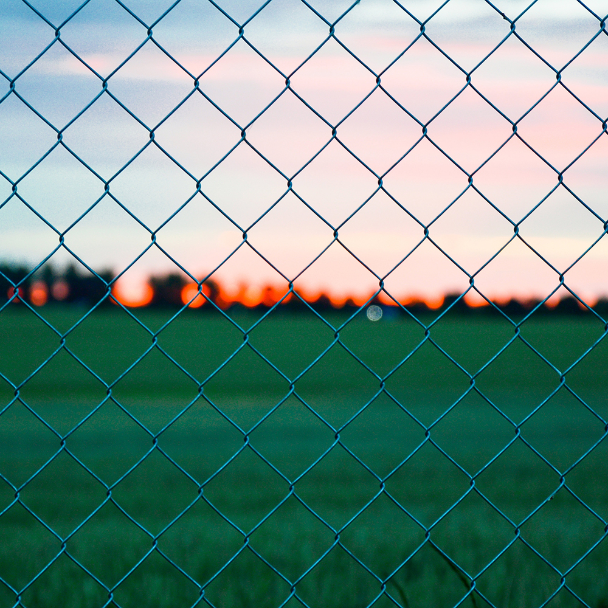

Пустота
Простое правило, которое часто нарушают: ставить рядом элементы с похожим смыслом и окружать их пустым пространством. Пустота — мощное средство воздействия.

Сетка
Размеры элементов и расстояния между ними укладываются в гармоничную схему — её называют сеткой. Если элемент выпадает, зритель может это заметить.